Which variables have associataion with the customer's conversion rate?
What sort of hypothesis test or visualization to analyze the variable?
What are the interpretation of my findings?
Breakdown
1. Preprocessing
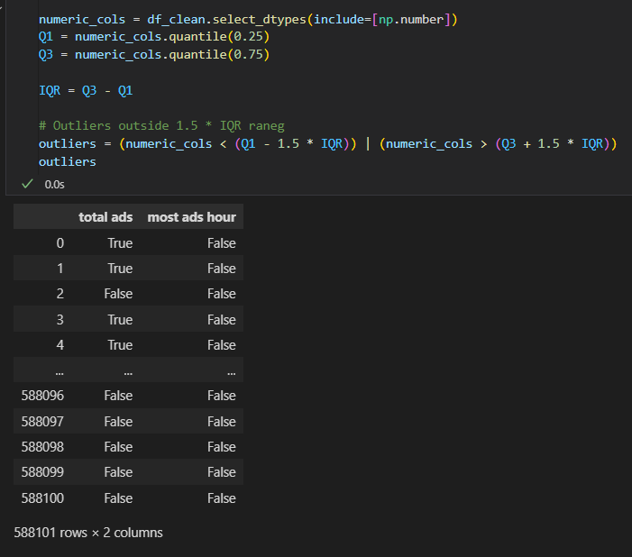
Started off with cleaning the data, by looking for nulls, empty data, duplicated data and
removing outliers with IQR method.
After cleaning, I proceeded with separating continuous and categorical variables.
2. Visualization
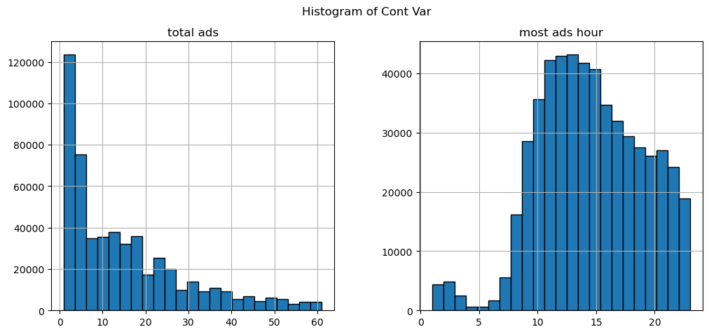
I proceeded to plot out my continuous variable to see the distribution of the data in a histogram, which helped me understand the overall shape of the data distribution.
I also plot out categorical variables on a pie chart in terms of percentage format to understand the efficacy of conversion rate.
3. Chi-Square Test for Independence
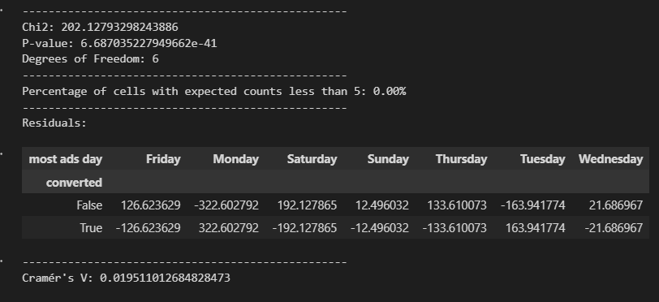
Chi-Square Test is used to determine if there is an association between two categorical variables.
There is a association between the day users see the ads and their conversion likelihood. However, cramer's V suggest that this association is relatively weak.
Users seeing ads most frequently on Monday tend to convert more, while Saturday seems to have the least conversion.
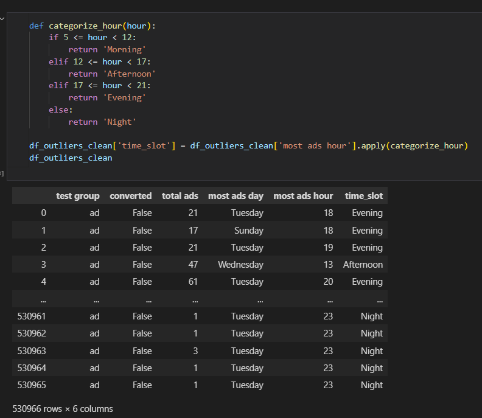
Proceeding, I did a feature where I categorise the time into "Morning", "Afternoon", "Evening", "Night".
This will then be tested as well to determine the association between timing and conversion rate.
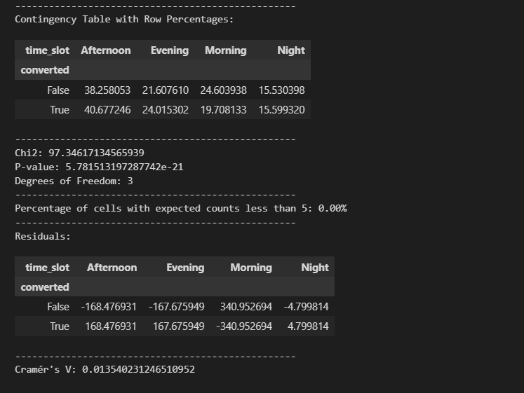
There is a statistically significant relationship between time slots and conversion rates, although the strength of this association is weak.
The Afternoon time slot has the highest conversion rates, suggesting it may be the best time to reach users.
4. A/B Test for equality of proportion
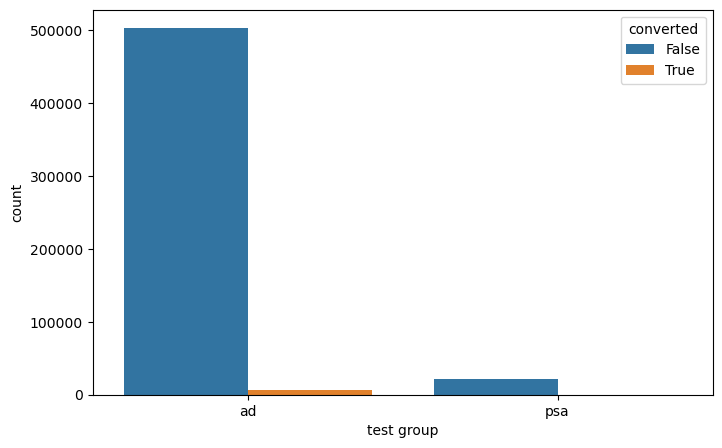
The purpose of this test is to evaluate the efficacy of different test groups (categorical variable).
The test groups consist of advertisements and public service announcements. I want to determine which group performs better.
This is where the Z-test for two proportions is applied.
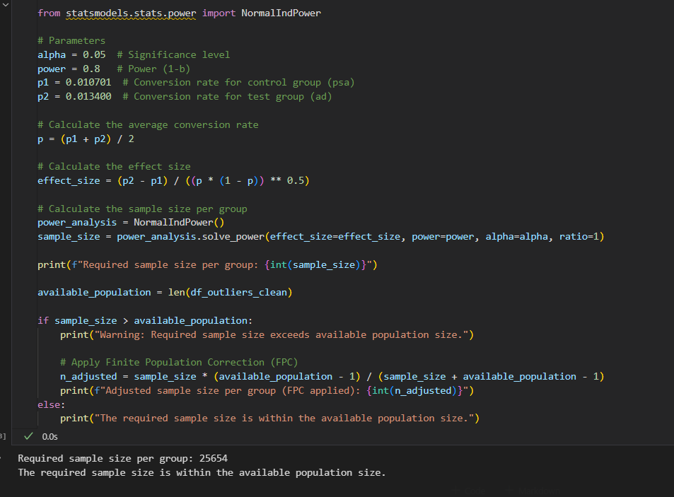
Before I start with the Z-test, I need to check how many samples I need to assume normality.
This is when NormalIndPower() comes into the play.
Without an appripriate amount of sample size, this could lead to Type I or Type II errors.
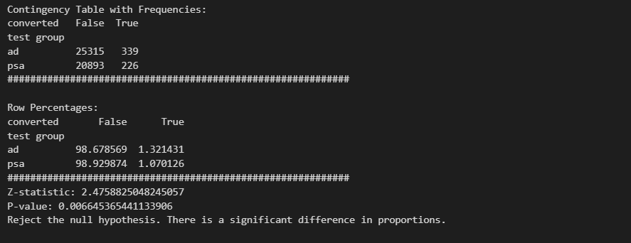
A higher Z-statistic (positive) suggests that the first group (success_ad) has a higher proportion compared to the second group (success_psa).
This indicates that there is a statistically significant difference in the proportions of conversions between the ad group and the PSA group. The difference in the proportions is not due to random chance.
However, we have to look into odds ratio to determine the likelihood of converting.
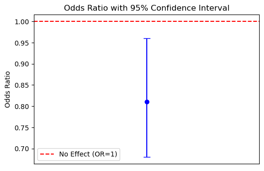 Overall Interpretation:
There is a statistical significant difference in conversion rates between the ad and psa groups.
The conversion rate in ad group is slightly higher than in the PSA group, however the odds ratio suggest that the users exposed to ad have a lower odds of converting than those exposed to PSA.
While the ad group had a higher conversion percentage, the odds ratio indicates that users in the PSA group had a better relative chance of converting compared to the ad group, when accounting for odds rather than raw proportions.
5. Continuous Variable Hypothesis Tests
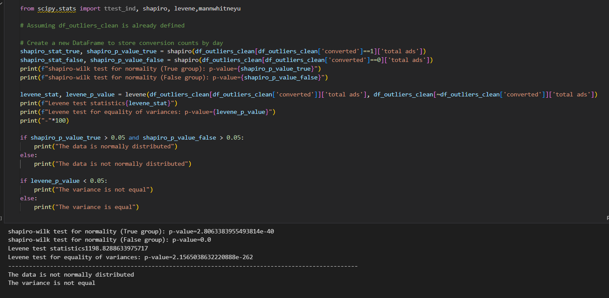
Before considering what sort of test I will be using, levene's and shapiro test will be implemented
to determine the homogenous of variance and normality of the data.
Assumption of normality and equal homogeneity of variance: independent t-test
Assumption of normality and not equal variances: Welch's t-test
When both assumptions fail: Mann-Whitney U Test
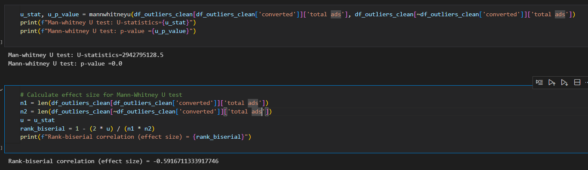
Thus, Mann-Whitney U Test is utilised to determine the significant difference between total ads that the customers seen and conversion rate.
Following, effect-size is implemented to look at the relationship between the variables.
Interpretation:
Strong inverse relationship between conversion and total ads: Users who did not convert saw more ads than those who converted.
6. Conclusion
This project provided valuable insights into the application of various statistical tests in A/B Testing, including Chi-Square Test, Z-test for two proportions, and Mann-Whitney U Test.
Through this analysis, I was able to identify significant associations and differences between test groups, as well as understand the impact of different variables on conversion rates.
The findings highlight the importance of selecting appropriate statistical methods based on data characteristics and ensuring sufficient sample sizes to avoid errors.
Overall, this project enhanced my understanding of A/B Testing methodologies and their practical implications in real-world scenarios.